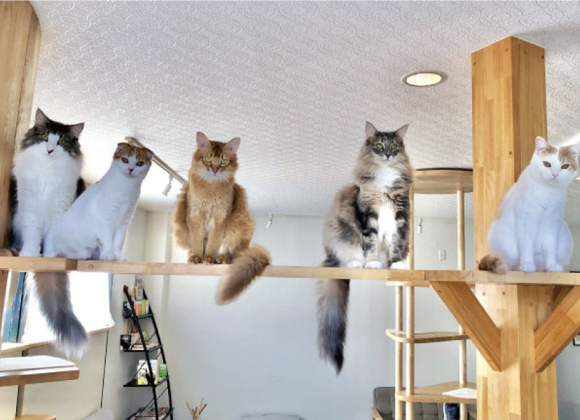
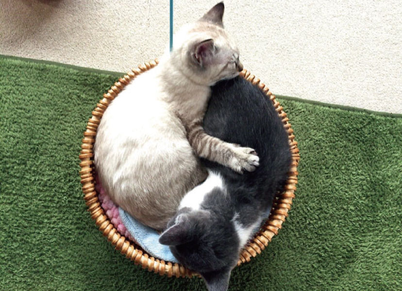

猫たちの紹介

ここでは、保護猫たちの様子を紹介します。
保護猫には、子猫だけでなく成猫やシニア猫まで、さまざまな年齢の猫たちがいます。毛色や性格も一匹ずつ異なり、人懐っこい猫や遊ぶことが大好きな猫、少し慎重な猫など、それぞれに個性があります。
また、保護された理由もさまざまです。飼い主を失った猫や、外で暮らしていた猫など、多くの猫が新しい家族との出会いを待っています。
一匹一匹の猫には、それぞれ違った性格や歩んできた背景があります。安心して暮らせる場所で過ごしながら、新しい家族との出会いを待っている猫たちも少なくありません。
年齢や見た目だけで判断するのではなく、一匹一匹の個性や魅力を知ることが、保護猫への理解を深める第一歩になります。
猫たちの幸せな未来のために

保護猫が新しい家族と出会い、安心して暮らせるように、健康管理や日々のお世話を大切にしています。
安心して暮らせる環境の中で過ごすうちに、猫たちの表情が少しずつ優しく穏やかになっていくことがあります。
猫はとてもきれい好き
猫は、起きている時間の多くを毛づくろいに使うほど、 きれい好きな動物です。舌を使って全身を丁寧に舐め、 自分で体を清潔に保とうとします。
そんな姿も、猫のかわいらしい魅力のひとつです。
一匹でも多くの猫が幸せな生活を送れるよう、温かく見守っていただけるとうれしいです。
新しい家族を迎えたい方へ
猫たちの個性や性格を知り、新しい家族として迎えることを考えてみませんか。
里親になるための流れや、迎える前に知っておきたいことをご紹介しています。